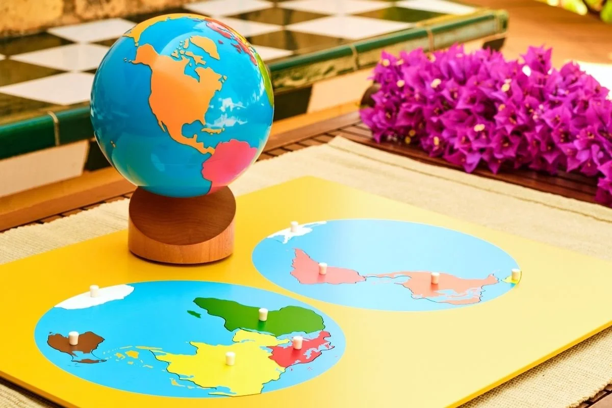
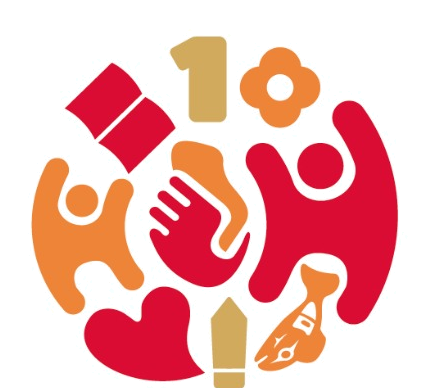
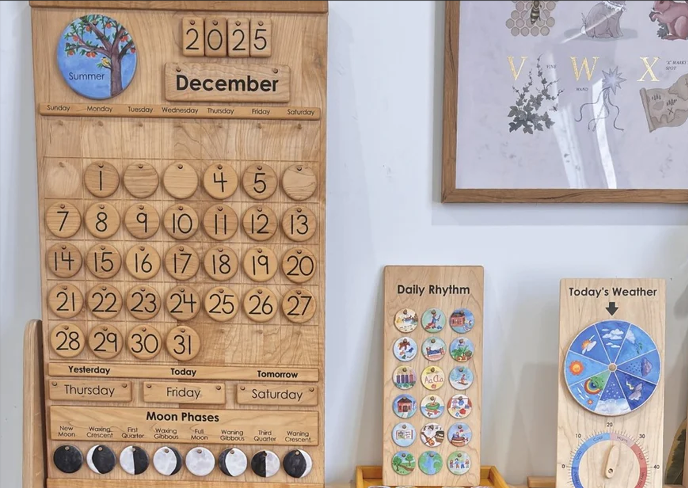
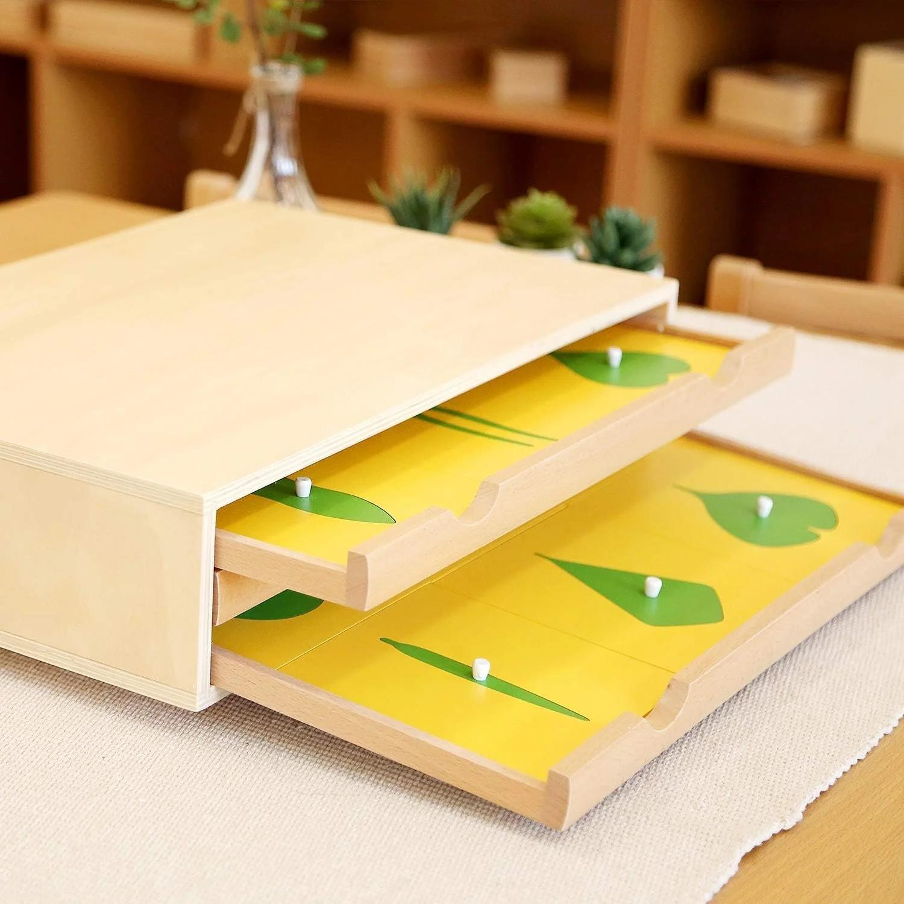
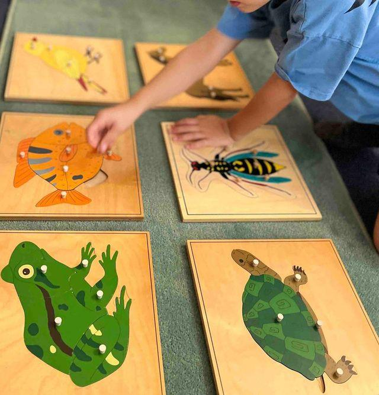

Our World
Geography • Continents • Cultures

Together We GrowMontessori Curriculum
Montessori Cultural Studies opens the child’s heart and mind to the wider world. Through geography, science, nature, history, art, music, and cultural exploration, children develop curiosity, respect, observation skills, and a joyful sense of connection.
Cultural Studies Areas
Montessori Cultural Studies helps children explore geography, science, nature, time, plants, animals, people, and the beauty of the world around them.

Geography • Continents • Cultures

Weather • Seasons • Time

Botany • Life Cycles • Observation

Zoology • Habitats • Classification
What Children Explore
In Montessori education, Cultural Studies includes geography, science, botany, zoology, history, art, music, and cultural awareness. These areas help children understand that they are part of a larger world filled with people, places, living things, natural patterns, and shared human stories.
Children explore land, water, continents, countries, maps, globes, and the beauty of different places around the world.
Weather, seasons, time, magnets, water, light, and simple experiments help children observe patterns and ask thoughtful questions.
Children study plants, leaves, flowers, seeds, trees, life cycles, and the natural environment through observation and hands-on exploration.
Children learn about animals, habitats, body parts, classification, life cycles, and our responsibility to care for living things.
Cultural exploration introduces children to music, art, traditions, celebrations, languages, foods, and stories from around the world.
Simple timelines, calendars, family stories, and seasonal rhythms help children begin to understand the passage of time.
How Children Learn
Through Cultural Studies, children begin to understand their place in the world. They observe nature, ask questions, compare similarities and differences, and develop respect for people, places, animals, plants, and the environment.
Children learn to notice details in nature, maps, weather, animals, plants, and the changing world around them.
Cultural lessons invite children to ask questions, make discoveries, and explore ideas through hands-on experiences.
Children discover continents, cultures, languages, traditions, and the interconnectedness of people around the world.
Learning about people, animals, plants, and the earth helps children develop empathy, care, and responsibility.
Children organize information by comparing, sorting, naming, and grouping animals, plants, landforms, and natural patterns.
Cultural Studies keeps learning joyful by helping children see the beauty, mystery, and richness of the world.
Cultural Studies at Home
Cultural Studies does not only happen in the classroom. Families can nurture curiosity by noticing the weather, caring for plants, reading maps, exploring nature, visiting parks, cooking foods from different cultures, listening to music, and talking about family stories and traditions.
Simple routines such as checking the calendar, observing seasonal changes, sorting leaves, watching birds, watering plants, or looking at a globe can help children feel connected to the wider world.
The goal is not to give children many facts to memorize. The goal is to help them stay curious, observant, respectful, and excited to discover more.
Frequently Asked Questions
Montessori Cultural Studies introduces children to geography, science, botany, zoology, history, art, music, cultures, and the natural world through hands-on exploration.
Children explore continents, maps, weather, seasons, plants, animals, life cycles, simple timelines, cultural traditions, music, art, and respect for the wider world.
No. Geography is one important part, but Cultural Studies also includes physical science, botany, zoology, history, art, music, cultural awareness, weather, seasons, and nature study.
Cultural Studies helps children develop curiosity, observation skills, empathy, global awareness, respect for nature, and a sense of connection to people, places, animals, plants, and the environment.
Families can observe the weather, care for plants, explore parks, look at maps and globes, cook foods from different cultures, listen to music, and talk about family traditions and seasonal changes.
Cultural Studies helps children see themselves as part of a beautiful, connected world. The best way to understand how this learning comes alive is to visit a Montessori classroom and see children exploring geography, science, nature, art, music, and culture through meaningful hands-on experiences.
Book a School Tour